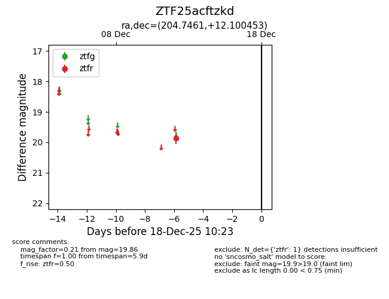
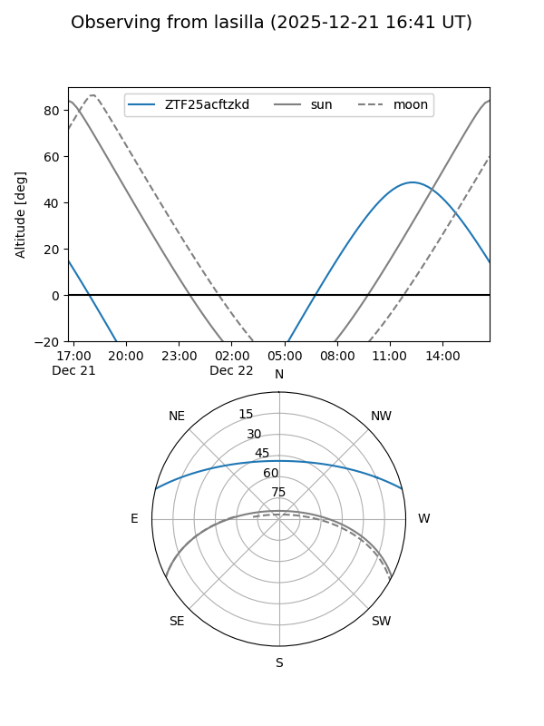
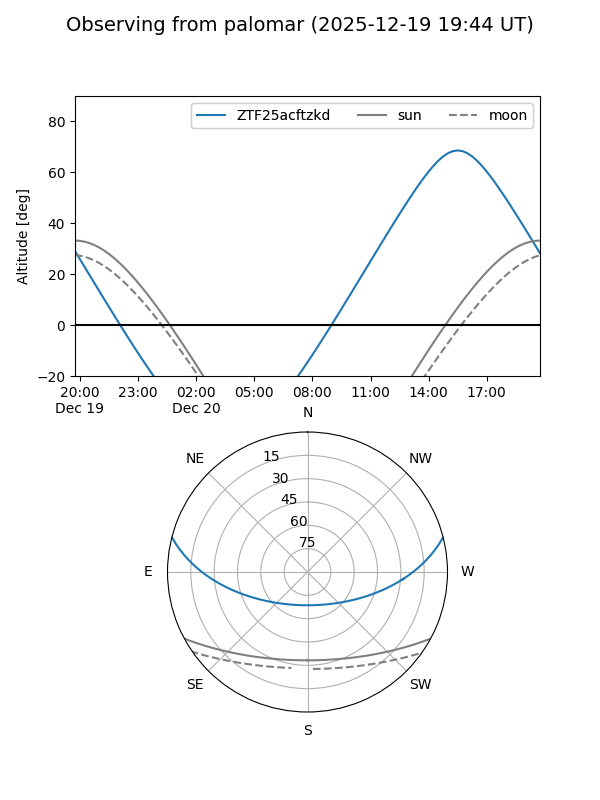

ZTF25acftzkd
Target ZTF25acftzkd at 2025-12-18 15:52
Aliases and brokers:
FINK: fink-portal.org/ZTF25acftzkd
Lasair: lasair-ztf.lsst.ac.uk/objects/ZTF25acftzkd
ALeRCE: alerce.online/object/ZTF25acftzkd
alt names
ZTF25acftzkd (ztf,fink_ztf)
Coordinates:
equatorial (ra, dec) = 204.7461,+12.10045
equatorial (HMS+DMS) = 13:38:59.07,+12:06:01.63
galactic (l, b) = (341.8173,+71.28748)
Photometry
last ztfr=19.94
2 ztfr detections
Lightcurve

Visibility


Additional plots